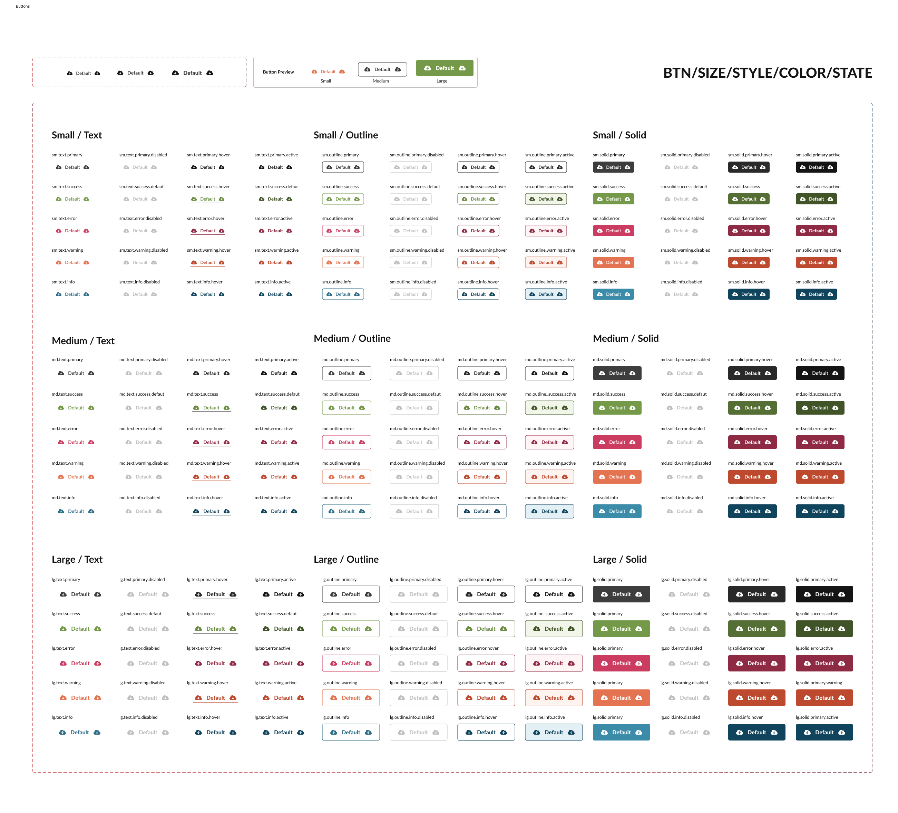

Work Examples
A collection of work from previous roles, including wireframes, low and high-fidelity designs, traceability documents, proofs of concepts, and more. This link is password protected, please reach out if you’d like access.

A collection of work from previous roles, including wireframes, low and high-fidelity designs, traceability documents, proofs of concepts, and more. This link is password protected, please reach out if you’d like access.
A project born from a love of bowling and a strong dislike of California traffic.

A digital cookbook to keep family recipes close, wherever we all may be.

A modern take on a familiar insurance platform, based in Colorado.

Personal component library for my side projects using NotionAI, ChatGPT, Storybook, Chromatic, and Angular
